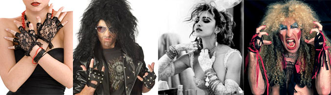

80s Fashion Trends: leg warmers Maybe everyone's leg were cold from all the miniskirts that were worn, but at least one or two pairs of leg warmers were found in every girls dresser. />

80s Fashion Trends: fingerless gloves Fingerless gloves were another odd 80's fashion fad. From romance enthusiasts to punk-rock fans, fingerless gloves were popular with quite a variety of 80s genres. The fingerless gloves are forever connected with Madonna's look in the mid-80s. />